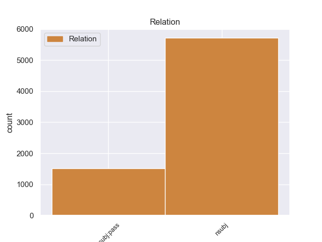
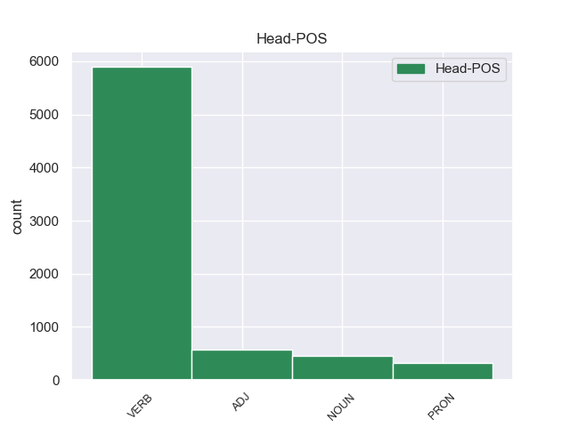
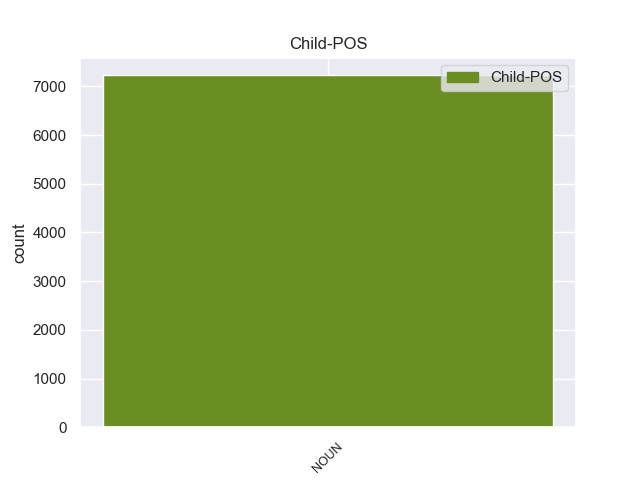

Distribution of features within this leaf



Agreement Rules sorted by frequency.
- When the dependent token is the nominal subject(nsubj) of the head token, and the dependent token is NOUN.
1 Gli _ _ _ _ 0 _ _ _
2 edifici edificio NOUN S Gender=Masc|Number=Plur 8 nsubj 8:nsubj _
3 di _ _ _ _ 0 _ _ _
4 il _ _ _ _ 0 _ _ _
5 centro _ _ _ _ 0 _ _ _
6 storico _ _ _ _ 0 _ _ _
7 erano _ _ _ _ 0 _ _ _
8 costruiti costruire VERB V Gender=Masc|Number=Plur|Tense=Past|VerbForm=Part 0 _ _ _
9 con _ _ _ _ 0 _ _ _
10 l’ _ _ _ _ 0 _ _ _
11 argilla _ _ _ _ 0 _ _ _
12 rossa _ _ _ _ 0 _ _ _
13 di _ _ _ _ 0 _ _ _
14 il _ _ _ _ 0 _ _ _
15 deserto _ _ _ _ 0 _ _ _
16 , _ _ _ _ 0 _ _ _
17 un _ _ _ _ 0 _ _ _
18 materiale _ _ _ _ 0 _ _ _
19 molto _ _ _ _ 0 _ _ _
20 fragile _ _ _ _ 0 _ _ _
21 . _ _ _ _ 0 _ _ _
1 Durante _ _ _ _ 0 _ _ _
2 il _ _ _ _ 0 _ _ _
3 terremoto _ _ _ _ 0 _ _ _
4 in _ _ _ _ 0 _ _ _
5 Iran _ _ _ _ 0 _ _ _
6 , _ _ _ _ 0 _ _ _
7 sono _ _ _ _ 0 _ _ _
8 morte _ _ _ _ 0 _ _ _
9 moltissime _ _ _ _ 0 _ _ _
10 persone _ _ _ _ 0 _ _ _
11 e _ _ _ _ 0 _ _ _
12 il _ _ _ _ 0 _ _ _
13 centro centro NOUN S Gender=Masc|Number=Sing 23 nsubj:pass 23:nsubj:pass _
14 storico _ _ _ _ 0 _ _ _
15 di _ _ _ _ 0 _ _ _
16 la _ _ _ _ 0 _ _ _
17 città _ _ _ _ 0 _ _ _
18 di _ _ _ _ 0 _ _ _
19 Bam _ _ _ _ 0 _ _ _
20 è _ _ _ _ 0 _ _ _
21 stato _ _ _ _ 0 _ _ _
22 completamente _ _ _ _ 0 _ _ _
23 distrutto distruggere VERB V Gender=Masc|Number=Sing|Tense=Past|VerbForm=Part 0 _ _ _
24 . _ _ _ _ 0 _ _ _
Disagree Examples:
1 Rilevata _ _ _ _ 0 _ _ _
2 la _ _ _ _ 0 _ _ _
3 presenza _ _ _ _ 0 _ _ _
4 di _ _ _ _ 0 _ _ _
5 gas _ _ _ _ 0 _ _ _
6 in _ _ _ _ 0 _ _ _
7 uno _ _ _ _ 0 _ _ _
8 di _ _ _ _ 0 _ _ _
9 i _ _ _ _ 0 _ _ _
10 tubi _ _ _ _ 0 _ _ _
11 trasparenti _ _ _ _ 0 _ _ _
12 che _ _ _ _ 0 _ _ _
13 compongono _ _ _ _ 0 _ _ _
14 l' _ _ _ _ 0 _ _ _
15 opera _ _ _ _ 0 _ _ _
16 , _ _ _ _ 0 _ _ _
17 i _ _ _ _ 0 _ _ _
18 guardiani guardiano NOUN S Gender=Masc|Number=Plur 20 nsubj 20:nsubj _
19 hanno _ _ _ _ 0 _ _ _
20 fatto fare VERB V Gender=Masc|Number=Sing|Tense=Past|VerbForm=Part 0 _ _ _
21 scattare _ _ _ _ 0 _ _ _
22 uno _ _ _ _ 0 _ _ _
23 speciale _ _ _ _ 0 _ _ _
24 piano _ _ _ _ 0 _ _ _
25 d' _ _ _ _ 0 _ _ _
26 emergenza _ _ _ _ 0 _ _ _
27 e _ _ _ _ 0 _ _ _
28 per _ _ _ _ 0 _ _ _
29 45 _ _ _ _ 0 _ _ _
30 minuti _ _ _ _ 0 _ _ _
31 i _ _ _ _ 0 _ _ _
32 pompieri _ _ _ _ 0 _ _ _
33 hanno _ _ _ _ 0 _ _ _
34 isolato _ _ _ _ 0 _ _ _
35 la _ _ _ _ 0 _ _ _
36 sala _ _ _ _ 0 _ _ _
37 . _ _ _ _ 0 _ _ _
1 Rilevata _ _ _ _ 0 _ _ _
2 la _ _ _ _ 0 _ _ _
3 presenza _ _ _ _ 0 _ _ _
4 di _ _ _ _ 0 _ _ _
5 gas _ _ _ _ 0 _ _ _
6 in _ _ _ _ 0 _ _ _
7 uno _ _ _ _ 0 _ _ _
8 di _ _ _ _ 0 _ _ _
9 i _ _ _ _ 0 _ _ _
10 tubi _ _ _ _ 0 _ _ _
11 trasparenti _ _ _ _ 0 _ _ _
12 che _ _ _ _ 0 _ _ _
13 compongono _ _ _ _ 0 _ _ _
14 l' _ _ _ _ 0 _ _ _
15 opera _ _ _ _ 0 _ _ _
16 , _ _ _ _ 0 _ _ _
17 i _ _ _ _ 0 _ _ _
18 guardiani _ _ _ _ 0 _ _ _
19 hanno _ _ _ _ 0 _ _ _
20 fatto _ _ _ _ 0 _ _ _
21 scattare _ _ _ _ 0 _ _ _
22 uno _ _ _ _ 0 _ _ _
23 speciale _ _ _ _ 0 _ _ _
24 piano _ _ _ _ 0 _ _ _
25 d' _ _ _ _ 0 _ _ _
26 emergenza _ _ _ _ 0 _ _ _
27 e _ _ _ _ 0 _ _ _
28 per _ _ _ _ 0 _ _ _
29 45 _ _ _ _ 0 _ _ _
30 minuti _ _ _ _ 0 _ _ _
31 i _ _ _ _ 0 _ _ _
32 pompieri pompiere NOUN S Gender=Masc|Number=Plur 34 nsubj 34:nsubj _
33 hanno _ _ _ _ 0 _ _ _
34 isolato isolare VERB V Gender=Masc|Number=Sing|Tense=Past|VerbForm=Part 0 _ _ _
35 la _ _ _ _ 0 _ _ _
36 sala _ _ _ _ 0 _ _ _
37 . _ _ _ _ 0 _ _ _
1 Per _ _ _ _ 0 _ _ _
2 tutta _ _ _ _ 0 _ _ _
3 la _ _ _ _ 0 _ _ _
4 giornata _ _ _ _ 0 _ _ _
5 i _ _ _ _ 0 _ _ _
6 carabinieri carabiniere NOUN S Gender=Masc|Number=Plur 8 nsubj 8:nsubj _
7 hanno _ _ _ _ 0 _ _ _
8 controllato controllare VERB V Gender=Masc|Number=Sing|Tense=Past|VerbForm=Part 0 _ _ _
9 decine _ _ _ _ 0 _ _ _
10 di _ _ _ _ 0 _ _ _
11 persone _ _ _ _ 0 _ _ _
12 , _ _ _ _ 0 _ _ _
13 tra _ _ _ _ 0 _ _ _
14 cui _ _ _ _ 0 _ _ _
15 i _ _ _ _ 0 _ _ _
16 cinque _ _ _ _ 0 _ _ _
17 utilizzatori _ _ _ _ 0 _ _ _
18 di _ _ _ _ 0 _ _ _
19 il _ _ _ _ 0 _ _ _
20 box _ _ _ _ 0 _ _ _
21 dove _ _ _ _ 0 _ _ _
22 sarebbe _ _ _ _ 0 _ _ _
23 avvenuta _ _ _ _ 0 _ _ _
24 la _ _ _ _ 0 _ _ _
25 violenza _ _ _ _ 0 _ _ _
26 : _ _ _ _ 0 _ _ _
1 Le _ _ _ _ 0 _ _ _
2 ripetute _ _ _ _ 0 _ _ _
3 telefonate telefonata NOUN S Gender=Fem|Number=Plur 5 nsubj 5:nsubj|7:nsubj _
4 hanno _ _ _ _ 0 _ _ _
5 finito finire VERB V Gender=Masc|Number=Sing|Tense=Past|VerbForm=Part 0 _ _ _
6 per _ _ _ _ 0 _ _ _
7 mettere _ _ _ _ 0 _ _ _
8 in _ _ _ _ 0 _ _ _
9 moto _ _ _ _ 0 _ _ _
10 i _ _ _ _ 0 _ _ _
11 dispositivi _ _ _ _ 0 _ _ _
12 di _ _ _ _ 0 _ _ _
13 sicurezza _ _ _ _ 0 _ _ _
14 e _ _ _ _ 0 _ _ _
15 le _ _ _ _ 0 _ _ _
16 ricerche _ _ _ _ 0 _ _ _
17 di _ _ _ _ 0 _ _ _
18 l' _ _ _ _ 0 _ _ _
19 utenza _ _ _ _ 0 _ _ _
20 da _ _ _ _ 0 _ _ _
21 la _ _ _ _ 0 _ _ _
22 quale _ _ _ _ 0 _ _ _
23 venivano _ _ _ _ 0 _ _ _
24 effettuate _ _ _ _ 0 _ _ _
25 . _ _ _ _ 0 _ _ _
1 I _ _ _ _ 0 _ _ _
2 morti morto NOUN S Gender=Masc|Number=Plur 5 nsubj 5:nsubj|21:nsubj|33:nsubj|47:nsubj|57:nsubj _
3 sono _ _ _ _ 0 _ _ _
4 l' _ _ _ _ 0 _ _ _
5 architetto architetto NOUN S Gender=Masc|Number=Sing 0 _ _ _
6 Adelio _ _ _ _ 0 _ _ _
7 Castiglioni _ _ _ _ 0 _ _ _
8 , _ _ _ _ 0 _ _ _
9 52 _ _ _ _ 0 _ _ _
10 anni _ _ _ _ 0 _ _ _
11 , _ _ _ _ 0 _ _ _
12 di _ _ _ _ 0 _ _ _
13 Locate _ _ _ _ 0 _ _ _
14 Varesino _ _ _ _ 0 _ _ _
15 ( _ _ _ _ 0 _ _ _
16 Como _ _ _ _ 0 _ _ _
17 ) _ _ _ _ 0 _ _ _
18 , _ _ _ _ 0 _ _ _
19 i _ _ _ _ 0 _ _ _
20 suoi _ _ _ _ 0 _ _ _
21 figli _ _ _ _ 0 _ _ _
22 Samuele _ _ _ _ 0 _ _ _
23 , _ _ _ _ 0 _ _ _
24 5 _ _ _ _ 0 _ _ _
25 anni _ _ _ _ 0 _ _ _
26 , _ _ _ _ 0 _ _ _
27 e _ _ _ _ 0 _ _ _
28 Roberta _ _ _ _ 0 _ _ _
29 , _ _ _ _ 0 _ _ _
30 11 _ _ _ _ 0 _ _ _
31 , _ _ _ _ 0 _ _ _
32 l' _ _ _ _ 0 _ _ _
33 elettricista _ _ _ _ 0 _ _ _
34 Luigi _ _ _ _ 0 _ _ _
35 Cazzaniga _ _ _ _ 0 _ _ _
36 , _ _ _ _ 0 _ _ _
37 67 _ _ _ _ 0 _ _ _
38 anni _ _ _ _ 0 _ _ _
39 , _ _ _ _ 0 _ _ _
40 di _ _ _ _ 0 _ _ _
41 Sovico _ _ _ _ 0 _ _ _
42 ( _ _ _ _ 0 _ _ _
43 Milano _ _ _ _ 0 _ _ _
44 ) _ _ _ _ 0 _ _ _
45 , _ _ _ _ 0 _ _ _
46 il _ _ _ _ 0 _ _ _
47 capocantiere _ _ _ _ 0 _ _ _
48 Tarcisio _ _ _ _ 0 _ _ _
49 Cattaneo _ _ _ _ 0 _ _ _
50 , _ _ _ _ 0 _ _ _
51 45 _ _ _ _ 0 _ _ _
52 , _ _ _ _ 0 _ _ _
53 di _ _ _ _ 0 _ _ _
54 Calolziocorte _ _ _ _ 0 _ _ _
55 , _ _ _ _ 0 _ _ _
56 il _ _ _ _ 0 _ _ _
57 geometra _ _ _ _ 0 _ _ _
58 Michelangelo _ _ _ _ 0 _ _ _
59 Lamberti _ _ _ _ 0 _ _ _
60 , _ _ _ _ 0 _ _ _
61 30 _ _ _ _ 0 _ _ _
62 anni _ _ _ _ 0 _ _ _
63 , _ _ _ _ 0 _ _ _
64 di _ _ _ _ 0 _ _ _
65 Lecco _ _ _ _ 0 _ _ _
66 . _ _ _ _ 0 _ _ _